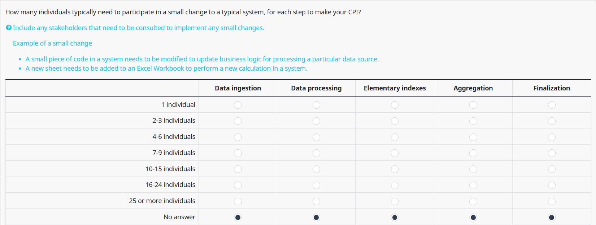
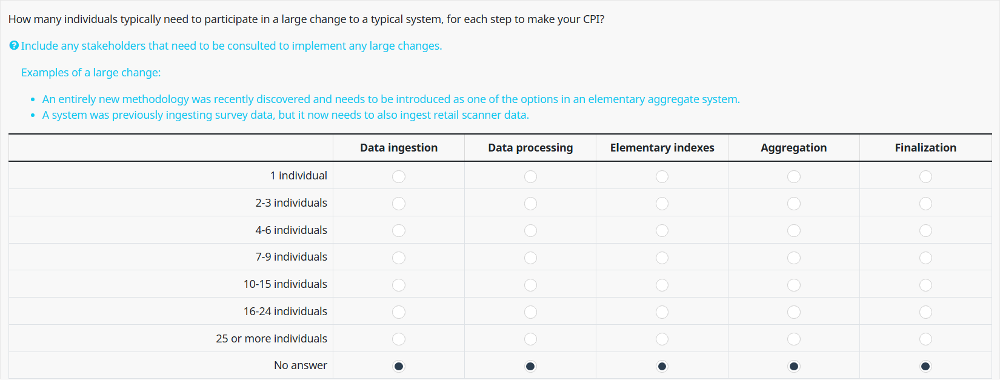

6 Number of People
In this section of the survey, we are interested in how many individuals need to participate in (1) small system changes and (2) large system changes.
The rationale behind asking this question is to get a sense for how much communication overhead is required to make changes to CPI Production Systems. We assume that the requirement of more individuals is associated with more communication overhead.
6.1 Number of People (Small Changes)
Respondents are presented with the following question.



Overall, the majority of respondents indicate between 1-3 individuals needing to be involved with small changes, while a minority indicate that 4 or more individuals need to be involved with small changes.
Our sense is that 1-3 individuals participating in a small change is reasonable. For low risk small changes, one person could make the change in isolation, while for more important small changes, one or two individuals could quickly peer review the change before it is implemented.
It appears that NSOs with Hybrid or Modular representative systems are slightly more likely to involve 4-6 individuals in small changes compared to NSOs with Monolithic representative systems.
Our suspicion here is that NSOs with Hybrid or Modular representative systems are more likely to have “interface boundaries” between systems maintained by two or more distinct teams. If this is the case, certain small changes may require input from individuals across two or more teams. This is not necessarily unreasonable. If system and team boundaries are well defined, communication about small changes to a system can still be efficient even if a slightly greater number of individuals need to be made aware of the small change.
There are no significant differences in the number of individuals required for small changes between the various team types.
6.2 Number of People (Large Changes)
Respondents are presented with the following question.



Unsurprisingly, more individuals are required to participate in large changes than small changes. It appears that the majority of respondents require between 2-6 individuals to participate in a large change to a system.
Interestingly, there is not a significant difference in the number of people required for large changes between NSOs with Monolithic representative systems and NSOs with Modular representative systems. Moreover, there is also no meaningful difference in this metric between the various team compositions.
We were a bit surprised by this finding, as we expected that certain team compositions and system architectures would be associated with differing numbers of people who need to participate in large changes.
Our hypothesis here is that the number of people required to participate in large changes is probably a function of organization size more than anything else. For example, if the size of all teams involved in a large change for a small NSO is 6, then it would be impossible for the total number of individuals to exceed 6, regardless of the CPI System architecture or the team compositions.